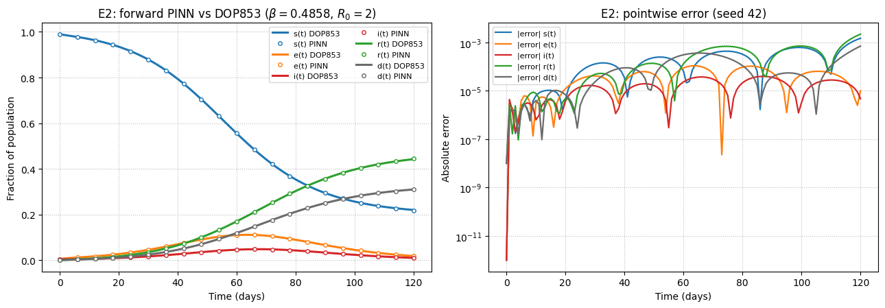

E2: forward PINN (markers) vs. DOP853 (lines) and pointwise error
| Target Quantity | 1% Noise | 5% Noise |
|---|---|---|
| β(t) relative L2 | 11.0% ± 0.7% | 11.6% ± 0.6% |
| μ relative error | 4.6% ± 0.3% | 5.4% ± 1.0% |
| Hidden s(t) | 0.36% ± 0.03% | 0.46% ± 0.09% |
| Hidden e(t) | 5.8% ± 0.6% | 6.4% ± 0.7% |
| Hidden i(t) | 5.8% ± 0.4% | 6.5% ± 0.8% |
E3/E4: 5 seeds; step reduction β: 0.55 → 0.25 at Day 30

E3: Recovered β(t) (shaded band = seed range at 5% noise)

E4: Unobserved s(t), e(t), i(t) reconstructed from cases/deaths